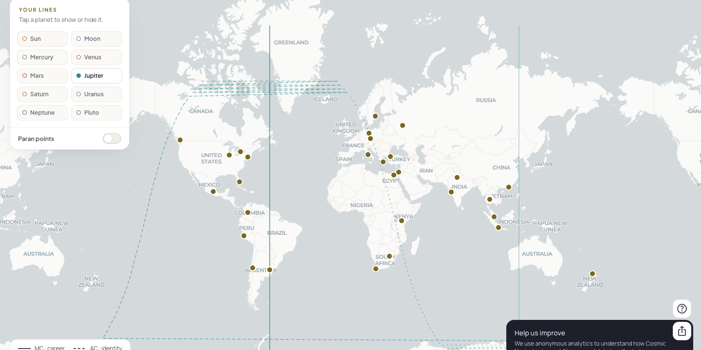

I built a world map from a birth chart.
Cosmic Navigator turns astrocartography into something people can explore: choose a life goal, see planetary lines on the map, and get five cities ranked for that goal.
- Owner, product, design, full-stack
- March 2026
- English, Thai

What it does
People arrive with a question — career, love, study, home, growth or travel. Cosmic Navigator calculates the planetary lines from their birth details, places those lines on an interactive map, and ranks five cities against the goal they chose. A city reading explains the alignment in plain language.
The same chart also powers a natal house chart and daily readings. The experience is available in English and Thai, with deeper city readings and timing windows in the paid tier.
How it's built
Front end
A vanilla JS single-page app styled with Tailwind 3.4. The natal chart page is React 18. Maps run on Leaflet.
Astrology engine
My own plain-JavaScript engine for chart and line calculations, so there's no paid astrology API underneath.
Backend
Firebase Hosting, Auth and Firestore, with Cloud Functions on Node 22 in asia-southeast1. DNS through Cloudflare.
Payments & growth
Stripe Checkout with a webhook Cloud Function. GA4 with Consent Mode v2 and built-in A/B testing.
What I'm improving
The city readings started out sounding too templated. I audited the live pages in the browser, worked out where the copy repeated itself, and wrote a content template — a TypeScript interface, voice guidelines and before/after examples — so new city content reads like a magazine piece, not a form letter.
I keep the judgment calls (tone, what a reading should say) for myself and hand the repetitive generation to AI tools.